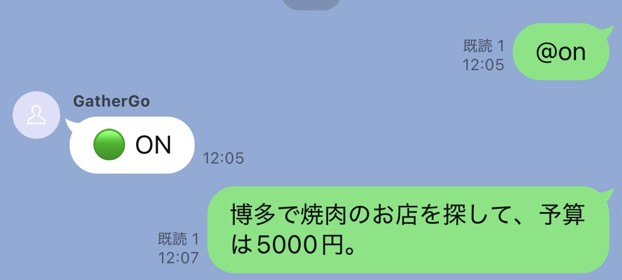
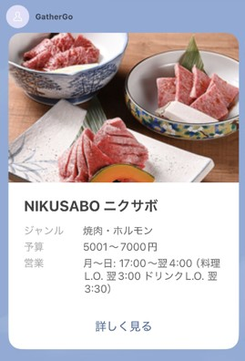
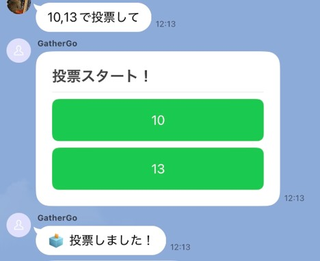
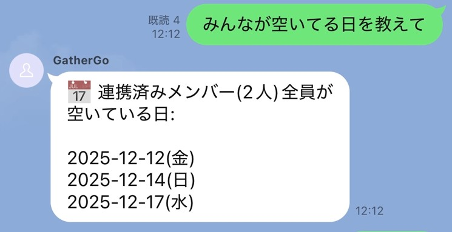

チャットボット開発
グループチャットで利用できるLINEチャットボットの開発。Gemini APIによる高度なテキスト解析や他APIとの連携により、多機能な対話応答を実現しました。
使用技術
- AI / Model: Gemini API
- Library / API: LINE Messaging API, Hot Pepper API
- Logic / Tools: Python
開発のプロセスと工夫
「幹事の負担を最小限にする」ことを目標に、要件定義から詳細設計、実装までを4人のチームで行い、アジャイル開発でコア機能から順次追加、改善を繰り返しました。
1. Gemini API による自然な対話の実装
定型文以外の入力に対してもGemini APIを介して解析を行うことで、柔軟にユーザーの意図を汲み取ることを可能にしました。
2. 複数APIを連携させた店舗検索ロジック
入力をGeminiでJSON形式に構造化し、必要なパラメータを抽出。これをHot Pepper APIへ受け渡し店舗検索を行う機能を実装しました。


3. Googleカレンダー同期による予定管理
Google Calendar APIと連携し、対話から抽出した日時情報をカレンダーへ自動登録。LINEを起点としたシームレスな予定管理を可能にしました。


評価と今後の展望
現在の到達点
LLMと外部APIを統合し、対話型サービスを構築。
次なる課題と展望
レスポンスの高速化:複数APIの逐次処理による返信遅延が課題。今後は非同期処理の導入による速度改善を目指します。
プロジェクトの要件定義および設計の詳細資料を公開しています。